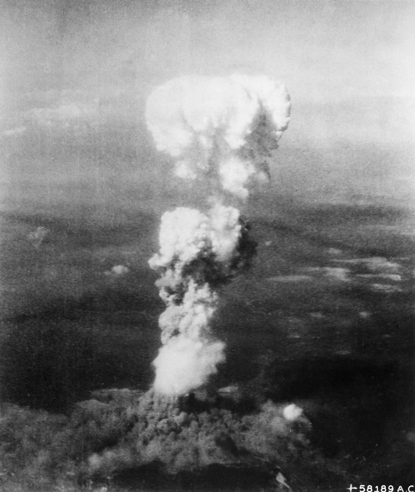

(Enola)The mushroom cloud rising of the city of Hiroshima was the first indicator to the citizens of distant parts of Japan that something catastrophic had happened. On August 6, 1945, The American military dropped the largest and most destructive weapon ever concieved on a major city in Japan. About 8,000 deaths were caused by the initial impact, but the total deaths ranged from 90,000 to 145,000 from radiation and other effects. The bomb had an enourmous fundamental cultural and social impact on Japan, and combined with the bombing of Nagasaki represented the final action that drove Japan to end its military action.